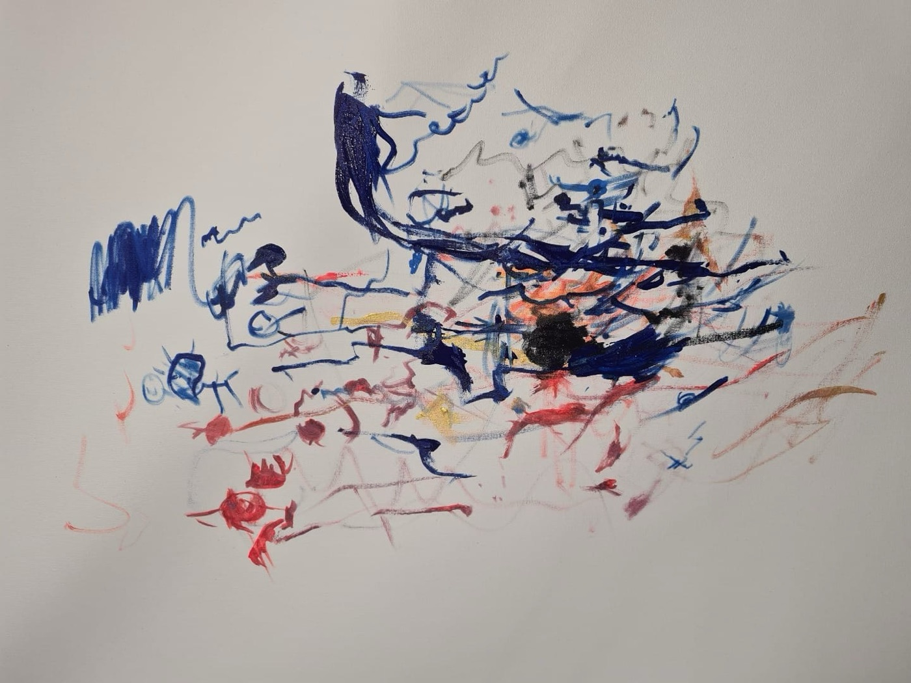

Psicanálise e trabalho em grupo
Desde 2012, uma proposta clínica de tratamento direcionada a crianças, adolescentes e jovens adultos.
Desde 2012, a Equipe Ponte pesquisa e realiza uma proposta clínica de tratamento através da psicanálise e do trabalho em grupo direcionado a crianças, adolescentes e jovens adultos que apresentam sofrimento e/ou significativos impasses no laço social, nas relações consigo e com os outros.
Muitas delas possuem diagnósticos que se enquadram no que a linguagem médica define como deficiências (de aprendizagem, déficit cognitivo, etc.), síndromes (Down, Prader-Willi, Rubinstein-Taybi, etc.), quadros neurológicos (epilepsia, paralisia cerebral, etc.) ou diagnósticos psiquiátricos (transtorno do espectro autista, transtorno obsessivo-compulsivo, transtorno bipolar, TDAH, etc.), e outras um acentuado sofrimento e dificuldade nos laços sem que possuam qualquer diagnóstico fechado; mas, de modo geral, possuem uma forma muito particular de se relacionarem com a vida.

A Ponte oferece um trabalho a partir do dispositivo grupal que se utiliza da teoria clínica psicanalítica, bem como de diferentes oficinas terapêuticas e artísticas como instrumentos que promovam novas formas de expressão e relação com o mundo.
O grupo
O trabalho com o grupo realizado pela equipe tem uma história e trajetória embasada na experiência clínica com casos graves, através dos trabalhos de análise, acompanhamento terapêutico e o dispositivo grupal, que pode ser melhor compreendida ao acessar o link o grupo.
As oficinas
Todas as oficinas da equipe são ofertas para que cada um possa se investigar e se descobrir em seus gostos, interesses e aptidões, de modo a trazer à tona seus gestos espontâneos e particulares, para além de suas dificuldades e traços limitantes de qualquer diagnóstico que o acompanhe. Com isso, visa tratar os impasses subjetivos e expandir as possibilidades de se colocar junto ao outro e no mundo.
O espaço de tratamento em saúde mental oferecido, fundamentado pela teoria psicanalítica, se caracteriza como um trabalho de subjetivação a partir da promoção de diferentes estímulos que cada oficina cuidadosamente estudada e elaborada para isso oferece. O objetivo é fornecer ambiente e intervenção que auxiliem cada participante a descobrir e trazer o que é mais particular de si em suas expressões e que, por conseguinte, avanços psíquicos em suas formas de se expressar e se relacionar de modo geral sejam conquistados.
As oficinas não visam o ensinamento das ferramentas artísticas no sentido de uma aprendizagem pedagógica e a construção de repertório artístico rigoroso e/ou profissionalizante, ainda que esse possa ser um efeito secundário.
Para saber um pouco mais de cada oficina e de como cada uma delas pode favorecer o tratamento clínico em questão, você pode acessar o link oficinas.
OficinasTextos e publicações
A fundamentação teórica para a construção desse trabalho ao redor do público-alvo em questão, das oficinas, assim como outros textos e publicações da equipe e seus membros.
LerA equipe
Para conhecer melhor os membros da equipe é só acessar o link a equipe.
ConhecerContato
Se você tem interesse em falar conosco, acesse o link contato para nos enviar um e-mail ou entre em contato por meio dos telefones e redes sociais.
EscreverAtenciosamente,
A Equipe